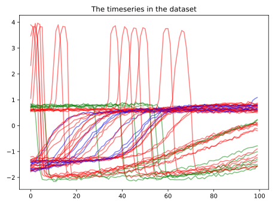

Note
Click here to download the full example code
Hyper-parameter tuning of a Pipeline with KNeighborsTimeSeriesClassifier¶
In this example, we demonstrate how it is possible to use the different algorithms of tslearn in combination with sklearn utilities, such as the sklearn.pipeline.Pipeline and sklearn.model_selection.GridSearchCV. In this specific example, we will tune two of the hyper-parameters of a KNeighborsTimeSeriesClassifier.
Out:
Performing hyper-parameter tuning of KNN classifier... Done!
Got the following accuracies on the test set for each fold:
|n_neighbors | weights |score_fold_1|score_fold_2|score_fold_3|
-----------------------------------------------------------------
| 5| uniform| 0.64706| 0.82353| 0.6875|
| 5| distance| 0.70588| 0.88235| 0.8125|
| 25| uniform| 0.64706| 0.64706| 0.625|
| 25| distance| 0.82353| 0.76471| 0.8125|
Best parameter combination:
weights=distance, n_neighbors=5
# Author: Gilles Vandewiele
# License: BSD 3 clause
from tslearn.neighbors import KNeighborsTimeSeriesClassifier
from tslearn.preprocessing import TimeSeriesScalerMinMax
from tslearn.datasets import CachedDatasets
from sklearn.model_selection import GridSearchCV, StratifiedKFold
from sklearn.pipeline import Pipeline
import numpy as np
import matplotlib.pyplot as plt
# Our pipeline consists of two phases. First, data will be normalized using
# min-max normalization. Afterwards, it is fed to a KNN classifier. For the
# KNN classifier, we tune the n_neighbors and weights hyper-parameters.
n_splits = 3
pipeline = GridSearchCV(
Pipeline([
('normalize', TimeSeriesScalerMinMax()),
('knn', KNeighborsTimeSeriesClassifier())
]),
{'knn__n_neighbors': [5, 25], 'knn__weights': ['uniform', 'distance']},
cv=StratifiedKFold(n_splits=n_splits, shuffle=True, random_state=42)
)
X_train, y_train, _, _ = CachedDatasets().load_dataset("Trace")
# Keep only timeseries of class 1, 2, 3
X_train = X_train[y_train > 0]
y_train = y_train[y_train > 0]
# Keep only the first 50 timeseries of both train and
# retain only a small amount of each of the timeseries
X_train, y_train = X_train[:50, 50:150], y_train[:50]
# Plot our timeseries
colors = ['g', 'b', 'r']
plt.figure()
for ts, label in zip(X_train, y_train):
plt.plot(ts, c=colors[label - 2], alpha=0.5)
plt.title('The timeseries in the dataset')
plt.tight_layout()
plt.show()
# Fit our pipeline
print(end='Performing hyper-parameter tuning of KNN classifier... ')
pipeline.fit(X_train, y_train)
results = pipeline.cv_results_
# Print each possible configuration parameter and the out-of-fold accuracies
print('Done!')
print()
print('Got the following accuracies on the test set for each fold:')
header_str = '|'
columns = ['n_neighbors', 'weights']
columns += ['score_fold_{}'.format(i + 1) for i in range(n_splits)]
for col in columns:
header_str += '{:^12}|'.format(col)
print(header_str)
print('-'*(len(columns) * 13))
for i in range(len(results['params'])):
s = '|'
s += '{:>12}|'.format(results['params'][i]['knn__n_neighbors'])
s += '{:>12}|'.format(results['params'][i]['knn__weights'])
for k in range(n_splits):
score = results['split{}_test_score'.format(k)][i]
score = np.around(score, 5)
s += '{:>12}|'.format(score)
print(s.strip())
best_comb = np.argmax(results['mean_test_score'])
best_params = results['params'][best_comb]
print()
print('Best parameter combination:')
print('weights={}, n_neighbors={}'.format(best_params['knn__weights'],
best_params['knn__n_neighbors']))
Total running time of the script: ( 0 minutes 1.230 seconds)